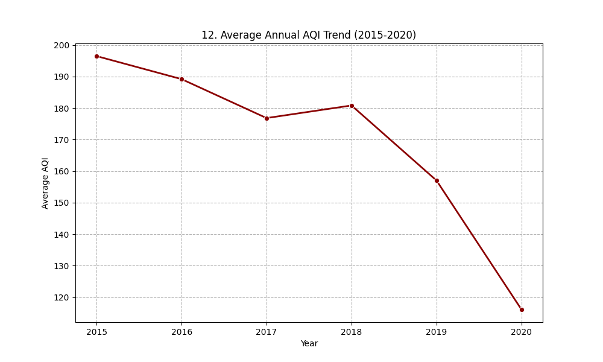
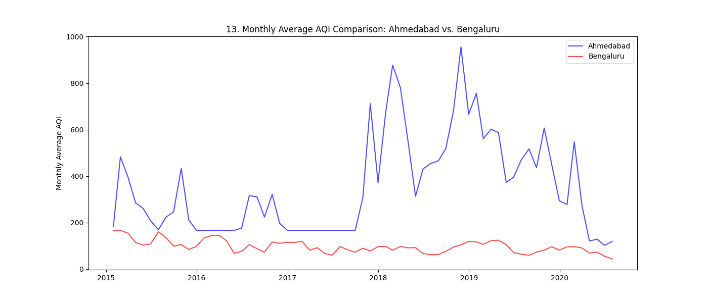

The biggest message from this project is that air quality is not random. When we study AQI over long time periods and across different cities, repeated trends appear. Some places remain relatively stable, while others show frequent spikes. That pattern-based behavior is important because it allows communities to move from reacting late to preparing early.
Another key takeaway is that one day of AQI data is never enough to tell the full story. Air quality changes with traffic, weather, season, and city structure. Looking at trends over months and years gives a more reliable picture of public risk than checking isolated daily values.

The model sections of this site all point in the same direction: daily AQI conditions can be predicted well enough to support practical planning. This does not replace medical guidance, but it can improve decisions such as school outdoor schedules, sports timing, elderly-care advisories, and city-level warning notices.
Module 4 added two major strengths to the project. First, SVM demonstrated strong separation between clean and poor-air days across multiple kernel choices. Second, Ensemble Learning improved stability by combining model viewpoints, reducing the chance that a single weak model would dominate the final result.
| Question | Project Conclusion |
|---|---|
| Can AQI risk be predicted? | Yes, with consistently strong model performance across methods. |
| Which methods were most effective? | SVM and Ensemble methods showed the best reliability in this run. |
| Is this useful in practice? | Yes, for earlier warnings, safer activity planning, and better public communication. |

The next step is to connect this pipeline to live data streams and automate daily risk updates. Adding weather feeds, traffic indicators, and regional events could make predictions even more timely. A public dashboard with simple color-coded alerts would convert model output into immediate community value.
The end of this story is optimistic: with regular data collection and clear communication, cities can respond sooner and people can protect themselves better. The most important outcome is not only model accuracy, but practical action that improves everyday health.